Team
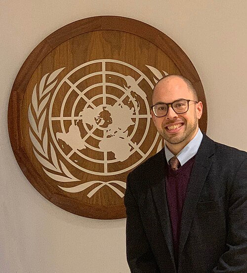
John-Ross Rizzo, MD, MSCI, FACRM
Deputy Director, Institute for Excellence in Health Equity
Vice Chair, Innovation and Access, Department of Physical Medicine and Rehabilitation
Ilse Melamid Endowed Associate Professor of Rehabilitation Medicine
J.R. Rizzo is a physician-scientist and health system leader at NYU Langone Health. He holds appointments in physical medicine and rehabilitation, neurology, and ophthalmology at NYU Grossman School of Medicine, as well as in mechanical and aerospace engineering and biomedical engineering at NYU Tandon School of Engineering, with an additional affiliation in electrical engineering through NYU WIRELESS. Working at the intersection of medicine, engineering, and health equity, he translates advances in motor control, visual guidance, artificial intelligence, and multisensory systems into technologies and health-system innovations designed to remove barriers and transform how people with disabilities navigate, access care, and participate in everyday life.
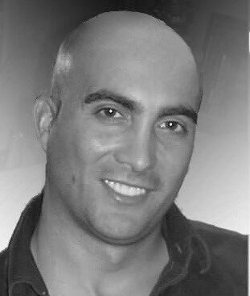
Todd E. Hudson, PhD
Assistant Professor
Todd E. Hudson is an Assistant Professor in the Department of Physical Medicine and Rehabilitation at NYU Grossman School of Medicine, with an additional appointment in Biomedical Engineering at NYU Tandon School of Engineering. His research focuses on computational neuroscience, biomarker development, sensorimotor modeling, navigation, and eye-tracking technologies.
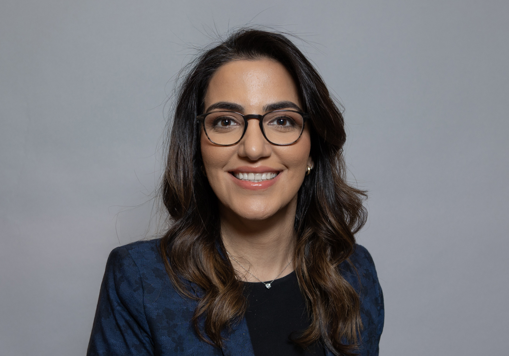
Mahya Beheshti, MD, PhD
Senior Research Scientist
Mahya Beheshti is a physician-scientist at Rusk Rehabilitation. She holds a PhD in Mechanical Engineering from the NYU Tandon School of Engineering. Her work focuses on neurorehabilitation, human-machine interfaces, and assistive technologies.
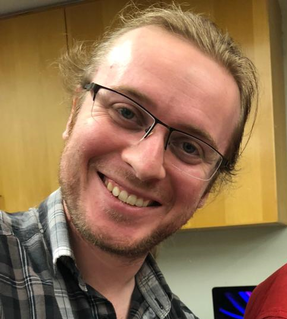
Giles Hamilton-Fletcher, PhD
Assistant Research Scientist
Giles Hamilton-Fletcher is an Assistant Research Scientist in the Department of Rehabilitation Medicine at NYU Grossman School of Medicine. His research focuses on assistive technology, sensory substitution, and accessibility for people with blindness and low vision.
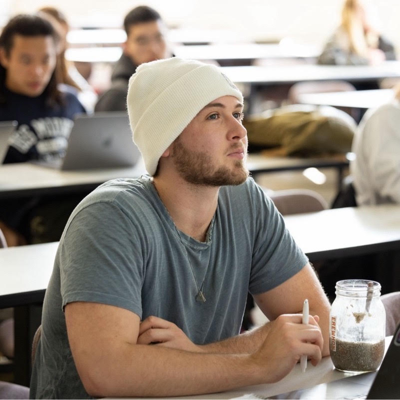
Ari Kanevsky
Ari Kanevsky holds an MS in Computer Science from Loyola Marymount University. His interests include artificial intelligence, computer vision, multimodal systems, assistive technology, and mobile and cloud infrastructure. He has more than a decade of experience developing end-to-end AI products, with prior work in medical imaging and machine learning and experience at Mila and Apple.
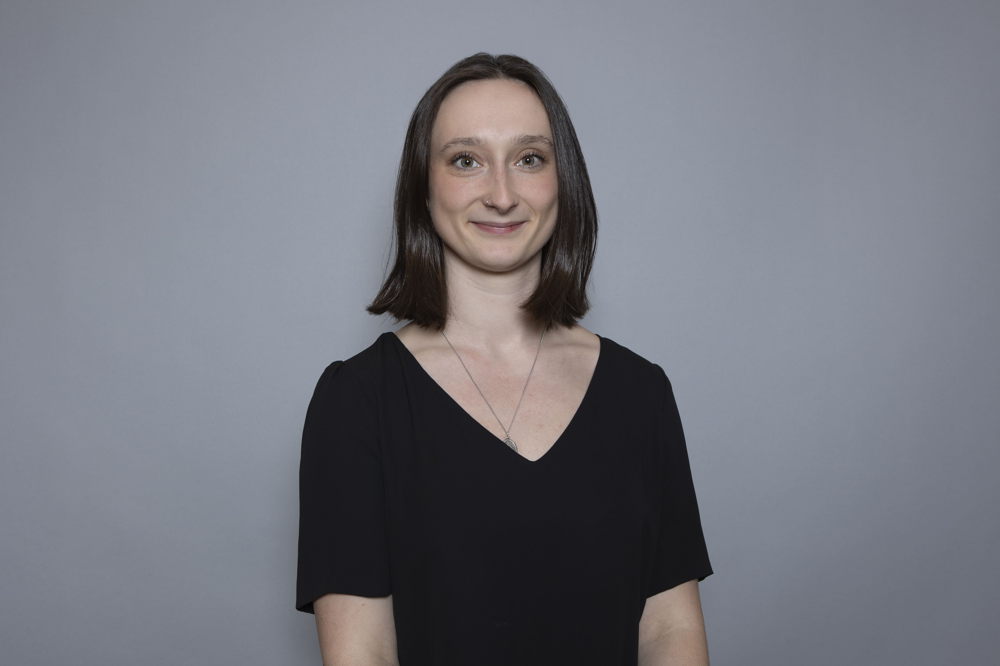
Dylan Mcdonald
Dylan is a Research Coordinator at NYU Langone with a background in transplant immunology and clinical studies. Her work focuses on participant recruitment, regulatory compliance, and improving healthcare access for underrepresented communities.
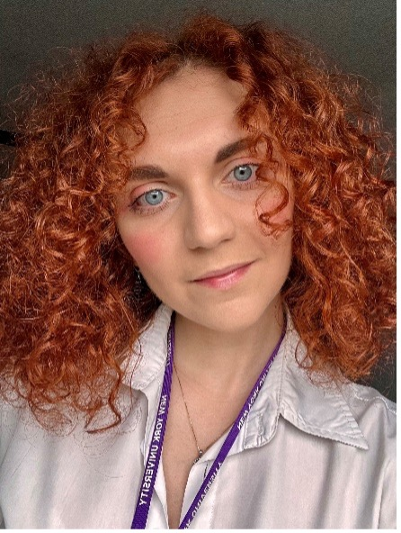
Fabiana Ricci, PhD
Postdoctoral Researcher
Fabiana Ricci is a Postdoctoral Researcher at Rizzo Labs. Her research interests include human behavior, complex systems, robotics, and assistive technology.
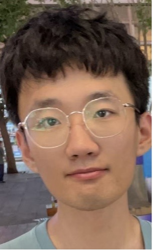
Ligao Ruan
PhD Candidate
Ligao Ruan is a PhD candidate whose research focuses on assistive technology for individuals who are blind or visually impaired. His work includes sensory substitution and wearable accessibility systems.
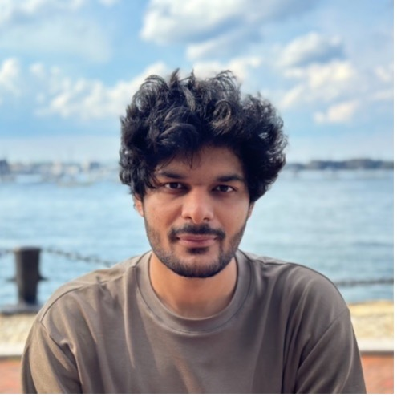
Gaurav Seth
PhD Candidate
Gaurav Seth is a PhD candidate in Rehabilitation Sciences at New York University. His research focuses on biomechanics, wearable sensing, biosignal processing, and human movement in assistive technology contexts.
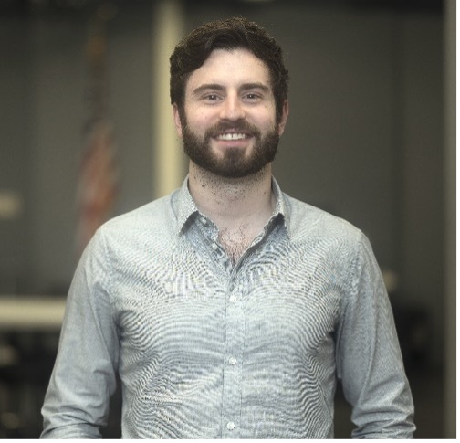
John Chomack, MS
PhD candidate
John Chomack is a PhD candidate in Rehabilitation Sciences at NYU Steinhardt. His research focuses on blindness and low vision, adaptive sports, community mobility, functional assessment, and gait and prosthetics analysis.
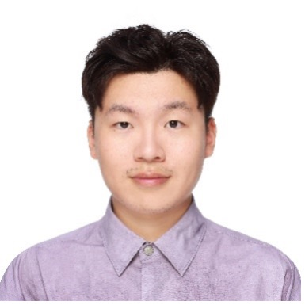
Dean Sheng
PhD Candidate
Dean Sheng is a PhD candidate in Computer Science at NYU Tandon School of Engineering. His research focuses on visual place recognition, SLAM, assistive technology, and multimodal large language models.
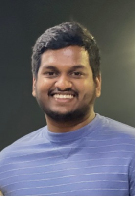
Raj Gadde
PhD Student
Raj Gadde is a PhD student in the Visual Motor Integration Lab at New York University. His research focuses on visuomotor coordination, eye tracking, motion capture, computer vision, and sensor fusion for motor rehabilitation.
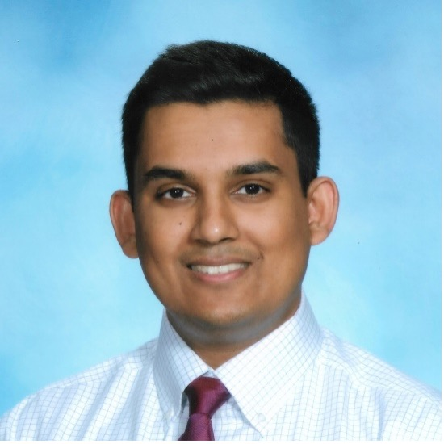
Vinay Ramdhanie
PhD Student
Vinay Ramdhanie is a PhD student in Biomedical Engineering at NYU Tandon School of Engineering. His research focuses on indoor navigation and robotics-driven accessibility solutions for people with blindness and low vision.
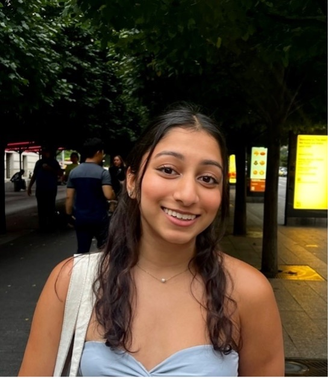
Anjali Rajkumar
Research Assistant
Anjali Rajkumar is a Research Assistant at Rizzo Labs. Her interests include translational research, accessibility, health literacy, patient autonomy, and neurological and linguistic diversity in healthcare.
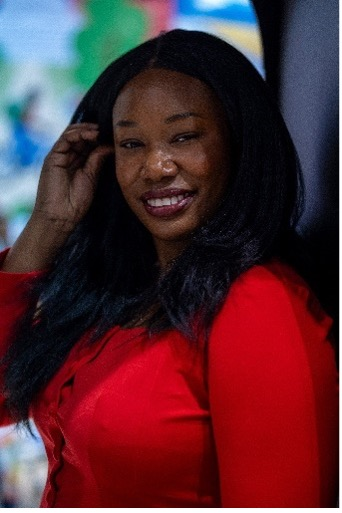
Josephine Odusanya
Graduate Student
Josephine Odusanya is a graduate student in Mechatronics and Robotics Engineering at New York University. Her research interests include assistive technology, XR in healthcare, multimodal interaction, spatial audio, and human robot collaboration.
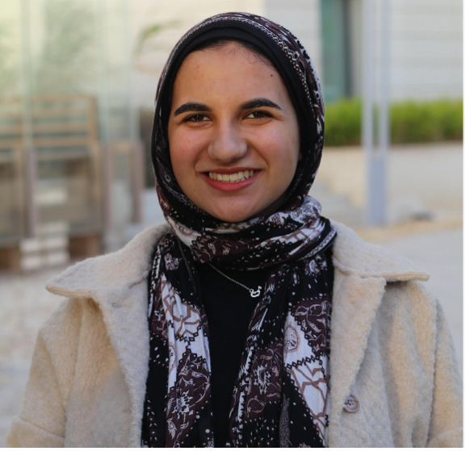
Rawan Badr El-Din
Undergraduate Researcher
Rawan Badr El-Din is an Undergraduate Researcher at Rizzo Labs and an Electrical Engineering student at NYU Abu Dhabi. Her interests include biomedical and neuroengineering, multimodal neuroscience, and assistive technologies using EEG, eye tracking, and motion tracking.
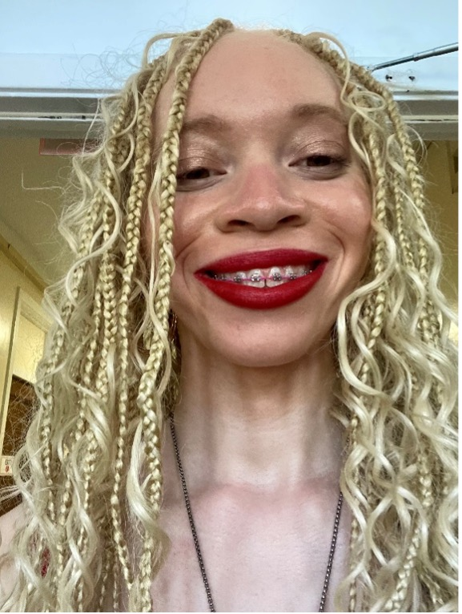
Jamila Conde
Undergraduate Researcher
Jamila Conde is an Undergraduate Researcher at Rizzo Labs and a Mathematics student at New York University. Her interests center on machine learning and neural networks.
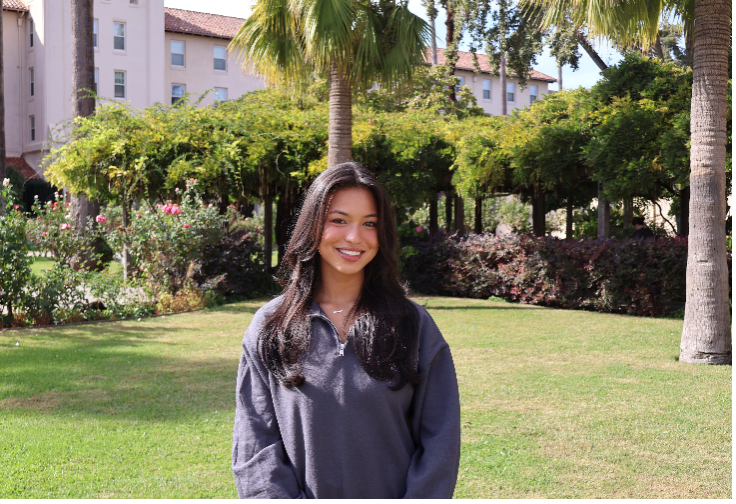
Karis Huh
Undergraduate Researcher
Karis Huh is an Undergraduate Researcher at Rizzo Labs and a Neuroscience student at Santa Clara University. Her interests include aging, neurodegenerative disease, disability inclusion, and assistive technologies.
Past Members
Alumni
- Alain Boldini (PhD) Assistant Professor New York Institute of Technology
- Jacqueline Libby (PhD) Assistant Professor Stevens Institute of Technology
- Maryam Hosseini (MD) Assistant Professor (PM&R) Tufts University School of Medicine
- Arash Yousefi (MD) Assistant Professor & Attending Physician Loma Linda University Health
- Andrew K. Abdou (DO) Attending Physician (PM&R) Burke Rehabilitation Hospital
- Edmond Ahdoot (MD) Attending Physician (Neurology) Wyckoff Heights Medical Center
- Connor Tupper (MD) Orthopedic Surgery Resident Northwell Health
- Tahereh Naeimi (MD) PM&R Resident Montefiore Medical Center
- Hisaaki Kawabata (MD Candidate) Medical Student University of Rochester
- Seda Bilaloglu (MS) Data Scientist Meta
- Alain Pascal (MS) Medical Student Touro COM
- Sahdev Baweja (Bachelor's) Medical Student NYMC
- Thomas S. Farrar (MD Candidate) Medical Student Tufts
- Preethika Venugopal (DO) Resident Touro Nevada
- Grace Ji (OD) Optometry (final year) SUNY Optometry
- Andy Garcia (MS) Growth Manager Probook AI
- Aaron Chen (BA) Software Engineer Marsh McLennan
- Michael Batavia (BS) Undergraduate Student NYU Tandon
- Eliot Sperling (MS) Research Associate Hofstra University
- Emanuel Belen (BS) Engineer NYU Tandon
- Yansong Peng (MS) PhD Student Cornell University
- Vamshi Thirumala (MS) Systems Integration Engineer NYU
- Bennett Ming Yuan Liu (BS) Undergraduate (senior) Stanford
- Taylor Faust (DO) Medical Student (OMS3–4) Tulane
- Blake Jones (DO) PM&R Resident NYU Rusk
Additional Alumni
Briana Kowal · Chris Kyriakides · Eric Alan Wong · Forrest Brooks · Hanzhang Cui · Jennifer Stone · Joe Adams · Joe Chin · Joel Birkemeier · Liang Niu · Mahesh Aitthal · Matt Graham · Moulik Gupta · Moutushi Kundu · Nawaf Al-Hussein · Nicole Barcley · Ninad Desai · Paul Phamduy · Peter Thai · Purva Patel · Qiming Cao · Ram Parsad · Seher Anwar · Shane Enright · Thomas Pascal · Usman Malik · Weiwei Dai · Yuhao Liu · Zhengxuan Wei